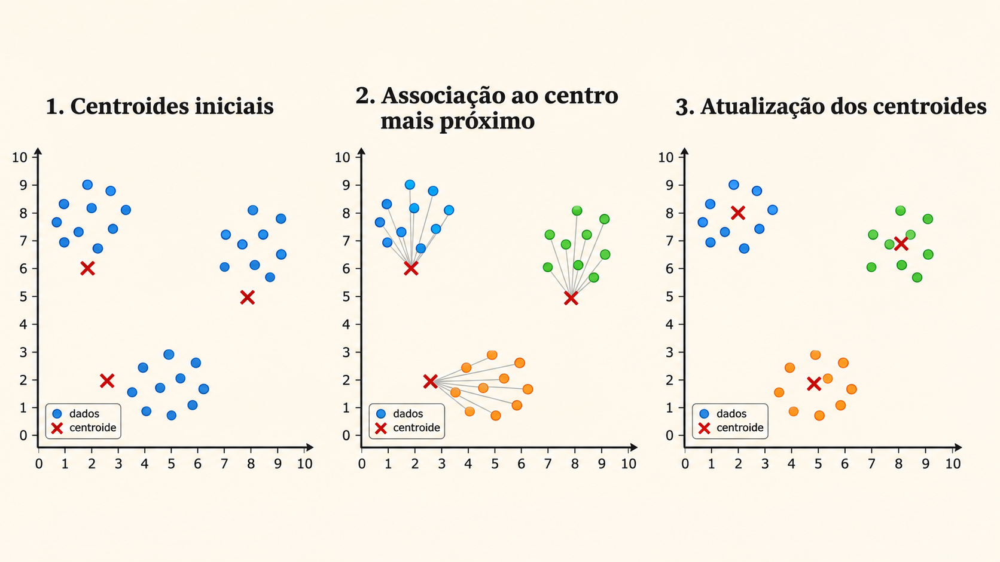
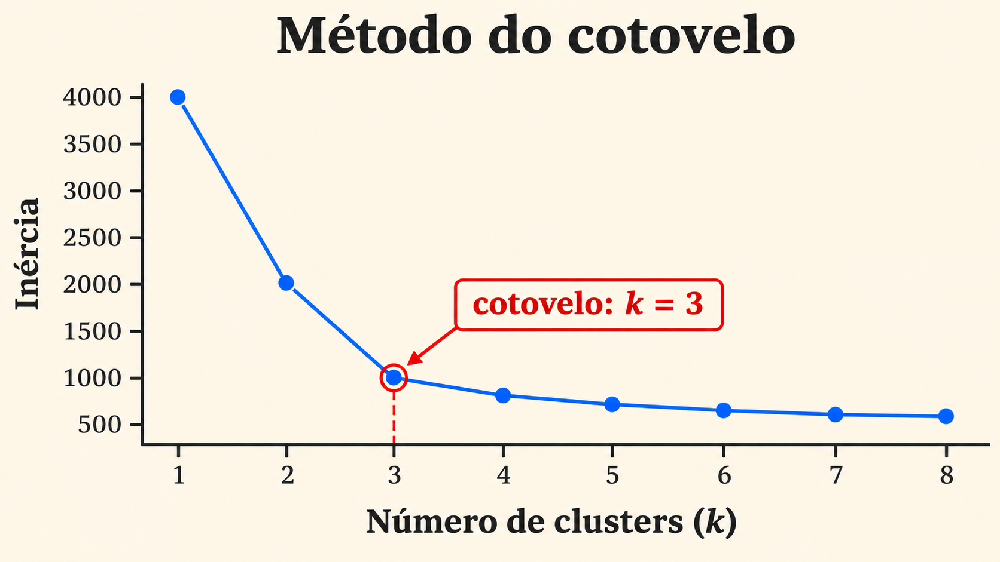
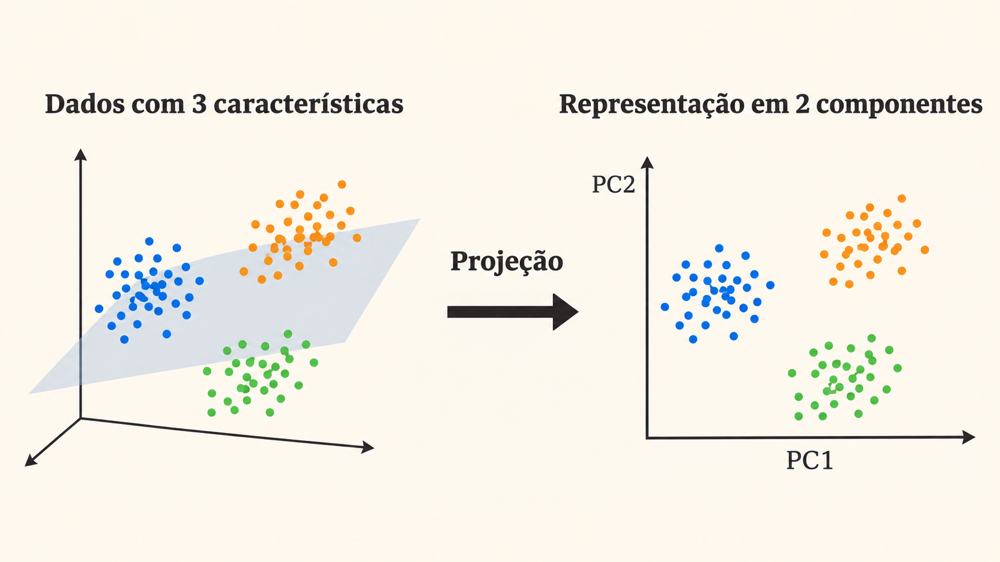

Aula 8
Aprendizado Não Supervisionado
Agrupamento K-means e redução de dimensionalidade com PCA
Machine Learning · ADS · 2026.2
Resultados de aprendizagem
Ao final da aula, o estudante deverá conseguir:
- diferenciar aprendizado supervisionado e não supervisionado;
- explicar o funcionamento do K-means;
- padronizar características antes do agrupamento;
- usar PCA para representar dados com várias características.
Duas formas de aprender com dados
| Aspecto | Supervisionado | Não supervisionado |
|---|---|---|
| Resposta conhecida | Sim | Não |
| Objetivo | Prever classe ou valor | Encontrar estrutura |
| Exemplo | Prever tempo de backup | Identificar perfis de uso |
| Saída | Previsão | Grupos ou representação reduzida |
Caso técnico: perfis de uso do sistema
Uma equipe deseja adaptar treinamento e suporte aos diferentes padrões de uso.
| Característica | Unidade | Interpretação |
|---|---|---|
| Sessões por semana | quantidade | frequência de acesso |
| Duração média | minutos | tempo em cada sessão |
| Funcionalidades usadas | quantidade por mês | amplitude de uso |
Problema: descobrir perfis sem possuir categorias prontas.
Atividade guiada · 5 minutos
Em duplas, identifiquem três concentrações na tabela.
| Usuário | Sessões por semana | Duração média |
|---|---|---|
| A | 2 | 10 min |
| B | 3 | 14 min |
| C | 2 | 16 min |
| D | 6 | 24 min |
| E | 7 | 29 min |
| F | 6 | 31 min |
| G | 10 | 45 min |
| H | 12 | 51 min |
| I | 11 | 55 min |
Entrega: integrantes de cada grupo e um nome descritivo para cada perfil.
Uma solução possível
| Grupo | Usuários | Descrição |
|---|---|---|
| 0 | A, B, C | uso ocasional |
| 1 | D, E, F | uso regular |
| 2 | G, H, I | uso intenso |
Os números 0, 1 e 2 apenas identificam os grupos. A interpretação vem depois.
Estrutura dos dados
| Elemento | Nesta aula |
|---|---|
X | características de uso |
y | não existe |
cluster | grupo atribuído pelo algoritmo |
centroide | centro numérico de um grupo |
Aprendizado não supervisionado
O algoritmo analisa características sem consultar uma resposta correta para cada exemplo.
O resultado pode revelar agrupamentos, representações compactas ou observações incomuns.
A utilidade do resultado depende da interpretação e do problema que motivou a análise.
O que o agrupamento procura
Um agrupamento útil tende a reunir observações semelhantes e separar observações diferentes.
| Pergunta | Exemplo |
|---|---|
| Quais usuários se comportam de forma parecida? | segmentação de uso |
| Quais chamados apresentam padrões semelhantes? | organização de incidentes |
| Quais produtos costumam aparecer juntos? | análise exploratória |
Distância como medida de diferença
Com duas características, a distância euclidiana entre A e B pode ser calculada por:
d(A,B) = √[(xA - xB)² + (yA - yB)²]
- Distância pequena indica valores próximos.
- Distância grande indica valores mais diferentes.
- O significado depende das características escolhidas.
Exemplo de distância
Usuário A: 2 sessões e 10 minutos.
Usuário B: 5 sessões e 14 minutos.
d(A,B) = √[(2 - 5)² + (10 - 14)²]
d(A,B) = √[9 + 16]
d(A,B) = √25
d(A,B) = 5O valor 5 resume a diferença considerando as duas características.
O efeito das escalas
| Característica | Faixa típica |
|---|---|
| Sessões por semana | 1 a 15 |
| Duração média em segundos | 300 a 3.600 |
A segunda característica possui números muito maiores e pode dominar a distância.
Grandeza numérica não significa maior importância para o problema.
Padronização das características
z = (valor - média) / desvio padrão
- A média de cada coluna passa a ficar próxima de zero.
- O desvio padrão passa a ficar próximo de um.
- As colunas tornam-se comparáveis na distância.
O StandardScaler calcula a transformação separadamente em cada característica.
Significado de K-means
| Termo | Significado |
|---|---|
K | quantidade de grupos escolhida |
means | médias usadas como centros dos grupos |
Com k = 3, o algoritmo procura três centroides e atribui cada observação ao centro mais próximo.
Uma iteração do K-means

Processo completo do K-means
- Escolher
kcentroides iniciais. - Atribuir cada observação ao centroide mais próximo.
- Recalcular cada centroide com a média do grupo.
- Repetir associação e atualização até a estabilização.
O resultado pode variar com a inicialização. O parâmetro random_state permite reproduzir o experimento.
Centroide e observação real
Um centroide contém a média de cada característica dentro do grupo.
| Sessões | Duração | Funções | |
|---|---|---|---|
| Centroide | 6,4 | 27,8 min | 7,2 |
Esses valores descrevem o centro do perfil. Eles podem não pertencer a nenhum usuário específico.
Inércia do agrupamento
A inércia soma as distâncias quadráticas de cada observação até o centroide do seu grupo.
- Valor menor indica grupos internamente mais compactos.
- A inércia sempre diminui quando
kaumenta. - Comparar reduções ajuda a escolher um ponto de equilíbrio.
Método do cotovelo

Após o cotovelo, grupos adicionais produzem reduções menores de inércia.
Coeficiente de silhueta
A silhueta compara a proximidade dentro do grupo com a separação em relação aos outros grupos.
| Faixa | Leitura geral |
|---|---|
| próximo de 1 | grupos compactos e separados |
| próximo de 0 | grupos sobrepostos |
| negativo | possível associação inadequada |
Escolha de k
A decisão combina evidências quantitativas e utilidade prática.
- Comparar a curva de inércia.
- Comparar a silhueta.
- Analisar tamanho e perfil de cada grupo.
- Verificar se a divisão apoia uma decisão real.
Limitações do K-means
- Exige a escolha prévia de
k. - Favorece grupos aproximadamente compactos e arredondados.
- Reage a valores extremos.
- Depende da escala e das características selecionadas.
- Pode produzir grupos mesmo quando a estrutura é fraca.
Interpretação responsável
O algoritmo entrega números de cluster. A equipe precisa examinar os dados antes de nomear os perfis.
- Use descrições baseadas nas médias observadas.
- Evite nomes ofensivos ou julgamentos sobre pessoas.
- Revise características que possam introduzir discriminação.
- Confirme se a segmentação melhora uma decisão concreta.
Parte 2 · Implementação do K-means
Fluxo da demonstração:
- criar e inspecionar os dados;
- padronizar as características;
- comparar valores de
k; - treinar, visualizar e interpretar os grupos.
1. Geração dos dados
import pandas as pd
from sklearn.datasets import make_blobs
centros = [[2.5, 12, 3], [6.5, 27, 7], [11, 48, 13]]
X_sintetico, _ = make_blobs(
n_samples=360,
centers=centros,
cluster_std=[1.2, 2.0, 2.6],
random_state=42
)
dados = pd.DataFrame(X_sintetico, columns=[
"sessoes_semana", "duracao_media_min", "funcionalidades_mes"
]).clip(lower=0)2. Inspeção inicial
dados.head()
dados.describe().round(2)
dados.isna().sum()Antes do modelo, confirme:
- unidades e faixas plausíveis;
- valores ausentes;
- valores extremos;
- significado de cada coluna.
3. Visualização sem grupos
import matplotlib.pyplot as plt
plt.scatter(
dados["sessoes_semana"],
dados["duracao_media_min"],
alpha=0.6
)
plt.xlabel("Sessões por semana")
plt.ylabel("Duração média (min)")
plt.show()O gráfico mostra duas características. A terceira continua disponível para o modelo.
4. Padronização
from sklearn.preprocessing import StandardScaler
colunas = [
"sessoes_semana",
"duracao_media_min",
"funcionalidades_mes"
]
escalador = StandardScaler()
X_padronizado = escalador.fit_transform(dados[colunas])O K-means será treinado com X_padronizado, não com as unidades originais.
5. Curva de inércia
from sklearn.cluster import KMeans
valores_k = range(1, 8)
inercias = []
for k in valores_k:
modelo_k = KMeans(
n_clusters=k,
random_state=42,
n_init="auto"
)
modelo_k.fit(X_padronizado)
inercias.append(modelo_k.inertia_)
plt.plot(valores_k, inercias, marker="o")
plt.xlabel("Número de clusters (k)")
plt.ylabel("Inércia")
plt.show()6. Treinamento com k = 3
modelo = KMeans(
n_clusters=3,
random_state=42,
n_init="auto"
)
clusters = modelo.fit_predict(X_padronizado)
dados["cluster"] = clustersfit_predict() aprende os centroides e retorna o grupo de cada linha.
7. Quantidade de usuários por grupo
dados["cluster"].value_counts().sort_index()O tamanho do grupo ajuda a identificar:
- segmentos muito pequenos;
- concentração excessiva em um único grupo;
- possíveis problemas de dados ou escolha de
k.
Grupos equilibrados não constituem uma exigência do K-means.
8. Centroides nas unidades originais
centroides_originais = escalador.inverse_transform(
modelo.cluster_centers_
)
centroides = pd.DataFrame(
centroides_originais,
columns=colunas
)
centroides.round(2)A transformação inversa permite interpretar sessões, minutos e funcionalidades.
9. Perfil médio dos clusters
perfil = dados.groupby("cluster")[colunas].mean()
perfil["quantidade"] = dados.groupby("cluster").size()
perfil.round(2)| Leitura | Pergunta |
|---|---|
| Frequência | Qual grupo acessa mais vezes? |
| Duração | Qual grupo permanece mais tempo? |
| Amplitude | Qual grupo usa mais funcionalidades? |
10. Nomes descritivos
Uma interpretação possível:
| Padrão médio | Nome descritivo |
|---|---|
| poucas sessões, curta duração, poucas funções | uso ocasional |
| valores intermediários | uso regular |
| muitas sessões, longa duração, mais funções | uso intenso |
Crie o mapeamento somente depois de observar qual número corresponde a cada perfil.
11. Visualização dos grupos
plt.figure(figsize=(9, 6))
plt.scatter(
dados["sessoes_semana"],
dados["duracao_media_min"],
c=dados["cluster"],
cmap="viridis",
alpha=0.65
)
plt.xlabel("Sessões por semana")
plt.ylabel("Duração média (min)")
plt.title("Agrupamento dos perfis de uso")
plt.show()As cores mostram a associação calculada pelo modelo.
12. Associação de um novo usuário
novo = pd.DataFrame({
"sessoes_semana": [8],
"duracao_media_min": [32],
"funcionalidades_mes": [9]
})
novo_padronizado = escalador.transform(novo)
cluster_novo = modelo.predict(novo_padronizado)[0]
print("Cluster:", cluster_novo)O novo registro precisa usar o mesmo escalador do treinamento.
13. Avaliação com silhueta
from sklearn.metrics import silhouette_score
silhueta = silhouette_score(
X_padronizado,
dados["cluster"]
)
print(f"Silhueta: {silhueta:.3f}")Compare a silhueta entre soluções com diferentes valores de k.
Fluxo técnico do K-means
- Selecionar características relevantes.
- Inspecionar e tratar os dados.
- Padronizar as colunas numéricas.
- Comparar valores de
k. - Treinar e interpretar os centroides.
- Validar utilidade, estabilidade e riscos.
Parte 3 · Redução de dimensionalidade
O conjunto possui três características, mas uma tela apresenta apenas dois eixos com facilidade.
Reduzir dimensionalidade significa representar várias características com um número menor de componentes.
Análise de Componentes Principais
O PCA cria novas variáveis chamadas componentes principais.
- Cada componente combina as características originais.
- O primeiro componente retém a maior variação possível.
- O componente seguinte retém outra parte da variação.
Os componentes não preservam automaticamente o significado das colunas originais.
Projeção em dois componentes

Variância explicada
explained_variance_ratio_ informa a proporção de variação representada por cada componente.
| Componente | Exemplo |
|---|---|
| PC1 | 72% |
| PC2 | 22% |
| Total em 2D | 94% |
Quanto maior o total, mais variação a representação conserva.
Padronização antes do PCA
O PCA do scikit-learn centraliza os dados, mas não ajusta automaticamente a escala de cada característica.
Nesta aula, usaremos a mesma matriz X_padronizado criada para o K-means.
Sem padronização, uma característica com valores maiores pode dominar os componentes.
PCA no scikit-learn
from sklearn.decomposition import PCA
pca = PCA(n_components=2)
X_pca = pca.fit_transform(X_padronizado)
print("Variância por componente:")
print(pca.explained_variance_ratio_.round(3))
print("Variância total em 2D:")
print(pca.explained_variance_ratio_.sum().round(3))Clusters no espaço do PCA
plt.figure(figsize=(9, 6))
plt.scatter(
X_pca[:, 0],
X_pca[:, 1],
c=dados["cluster"],
cmap="viridis",
alpha=0.7
)
plt.xlabel("Componente principal 1")
plt.ylabel("Componente principal 2")
plt.title("Clusters representados com PCA")
plt.show()O PCA cria as coordenadas. As cores continuam vindo do K-means.
O que o PCA preserva e perde
| Preserva parcialmente | Pode perder |
|---|---|
| variação global | detalhes presentes em componentes descartados |
| relações lineares | estrutura não linear |
| proximidade aproximada | interpretação direta das colunas |
Uma visualização clara não garante que o agrupamento seja correto ou útil.
Usos adequados do PCA nesta disciplina
- visualizar dados com muitas características;
- resumir informação antes de uma análise exploratória;
- identificar redundância entre características;
- reduzir o custo de alguns modelos após validação.
Para a aula de hoje, o objetivo principal consiste em visualizar os clusters.
Parte 4 · Laboratório guiado · 20 minutos
Em duplas, executem o notebook e comparem k = 2, k = 3 e k = 4.
- Registrem inércia e silhueta.
- Observem o tamanho dos grupos.
- Interpretem os centroides nas unidades originais.
- Escolham uma solução e justifiquem.
- Representem a solução escolhida com PCA.
Entrega: tabela comparativa, escolha de k e conclusão de até cinco frases.
Tabela de entrega
k | Inércia | Silhueta | Tamanhos | Interpretação |
|---|---|---|---|---|
| 2 | ... | ... | ... | ... |
| 3 | ... | ... | ... | ... |
| 4 | ... | ... | ... | ... |
Escolha: k = ...
Justificativa: métrica + perfil dos grupos + utilidade.
Experimento adicional · 10 minutos
Adicionem um usuário extremo e repitam o K-means:
usuario_extremo = pd.DataFrame({
"sessoes_semana": [35],
"duracao_media_min": [140],
"funcionalidades_mes": [28]
})
dados_extremos = pd.concat(
[dados[colunas], usuario_extremo],
ignore_index=True
)Compare centroides, grupos e silhueta antes e depois.
Erros comuns no laboratório
| Erro | Efeito |
|---|---|
| treinar com colunas sem padronização | uma escala domina as distâncias |
| interpretar o número do cluster como ordem | cria significado inexistente |
| escolher k apenas pela menor inércia | favorece sempre mais grupos |
| confundir PCA com K-means | atribui ao gráfico um papel de agrupamento |
Defesa dos resultados · 10 minutos
Cada dupla terá até um minuto para responder:
- Qual valor de
kfoi escolhido? - Qual evidência quantitativa sustenta a escolha?
- Como os grupos podem ser descritos?
- O PCA preservou quanto da variação?
- Qual limitação merece atenção?
Síntese do laboratório
- K-means depende de distância e escala.
- O valor de
kexige comparação. - Centroides ajudam a interpretar os grupos.
- PCA ajuda a visualizar várias características.
- A equipe deve validar utilidade e riscos.